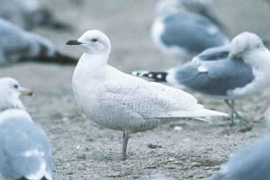
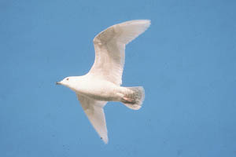

| These photographs accompany records that have been submitted to the committee. This record has
been ACCEPTED.  Iceland Gull Larus glaucoides 20 Jan 86, Otay Dump, SD 1986-015 © 1986 Arnold Small  Iceland Gull Larus glaucoides 20 Jan 86, Otay Dump, SD 1986-015 © 1986 Louis Bevier Back to CBRC Rare Bird Photos |